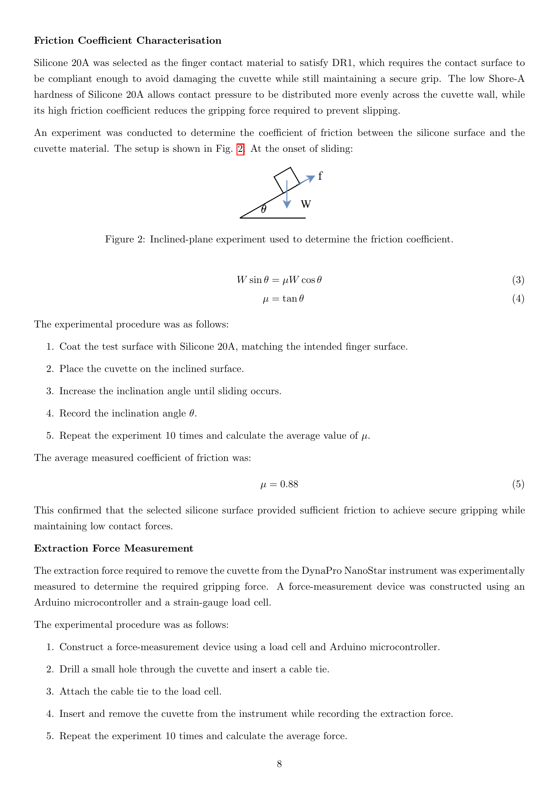

Project ATOM
Group Meeting Update
Stage overview, early hardware validation, gripper simulation choice, and laboratory arrangements
28 August 2026
Stage overview, early hardware validation, gripper simulation choice, and laboratory arrangements
28 August 2026
Current teamOnly Xinkai and I remain in the project team.
Our positionAfter discussion, we still want to complete the full Project ATOM scope.
At this stage, we do not want the reduced team size to reduce the project scope.
HardwarexArm 850 received on 27 August 2026
SoftwareStage 1 simulation environment is being built
Immediate priority: establish the basic simulation workflow, then begin controlled hardware commissioning early.
Simulation and fixed-base manipulation foundation.
Reliable interaction with laboratory instruments.
Mobile-base integration and transport between stations.
Supervised end-to-end demonstration of the prescribed workflow.
We will present the detailed plan for each stage when we reach that stage.
Robot model, planning, interfaces and a minimal task.
Communication, control, frames, limits and fault behaviour.
Why: expose communication and integration problems before the project direction becomes expensive to change.
Our current preference: complete real-hardware integration and repeated testing in our own mock-up first, because the laboratory observed on 27 August was cluttered and had uncertain clearances.
Will the laboratory be reorganised or otherwise prepared for the later project stages?

Question: is this evidence sufficient for our gripper work?
| Option | Benefit | Main concern |
|---|---|---|
| Gazebo only; revisit later | Lowest initial setup effort. | Possible late rework if detailed contact behaviour becomes necessary. |
| Gazebo system + small MuJoCo gripper study in Stage 1 | Keeps ROS / whole-system integration simple while testing higher-detail contact separately. | Two small models to maintain. |
| Move the whole project to MuJoCo now | One simulator if contact dynamics dominates the project. | Higher integration risk before we have measured friction, compliance and force data. |
Paper check: the provided paper set contains no direct example of MuJoCo or Gazebo being used to validate this type of silicone laboratory gripper. The closest Liverpool vial-insertion paper validates force/tactile feedback on real hardware.
Proposed discussion point: decide the required gripper fidelity now; if needed, begin a small MuJoCo testbench during Stage 1 rather than migrate the whole stack later.
Coarse mobile positioning was refined by a six-point station procedure to reported ±0.12 mm and ±0.005°.
Location cubes, custom stations, electric door actuators and light curtains were part of the system.
The vial-insertion study improved reported success from 48.78% vision-only to 89.55% with force feedback.
The later platform reports extensive development and debugging to achieve low module failure rates.
Our scope: execute a predefined workflow. Autonomous selection of the next chemistry experiment is not required.